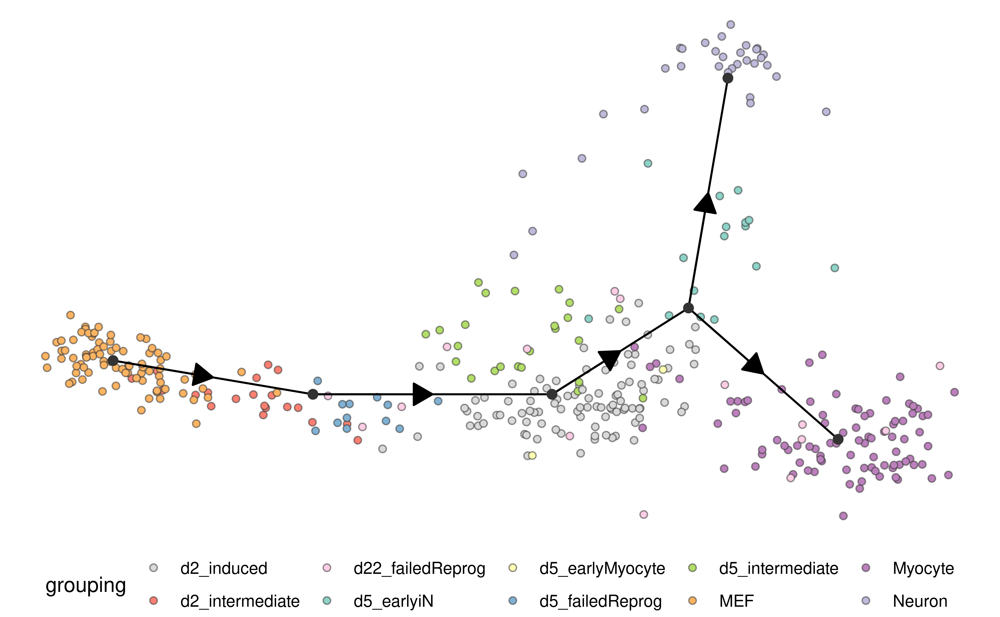
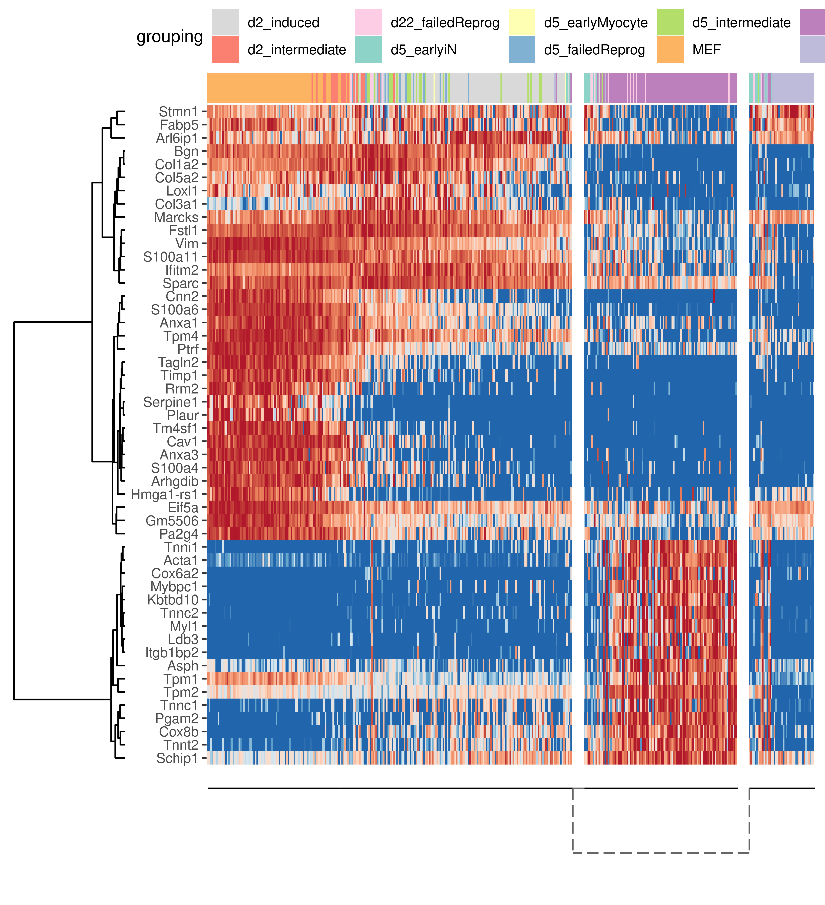

The dyno package guides the user through the full path of trajectory inference on single-cell data, starting from the selection of the most optimal methods, to the running of these methods, right to the interpretation and visualisation of the trajectories.
Installation
You can install dyno from github using:
# install.packages("devtools")
devtools::install_github("dynverse/dyno")Trajectory inference workflow
library(dyno)
#> Warning: replacing previous import 'dplyr::vars' by 'ggplot2::vars' when
#> loading 'dynmethods'
library(tidyverse)
data("fibroblast_reprogramming_treutlein")
task <- fibroblast_reprogramming_treutleinInferring and interpreting trajectories consists of five main steps
Selecting the most optimal TI methods
The choice of method depends on several factors, such as prior expectations of the topology present in the data, dataset size, and personal preferences. To select the best methods given a certain task we use the results from (Saelens et al. 2018) (doi).
guidelines <- guidelines_shiny(task)
methods <- guidelines$methods %>% filter(selected) %>% pull(method_id) %>% first()
Running the methods
To make it easy to plot and interpret trajectories from different methods, we use wrappers for each method, transforming its input and output into common models. Furthermore, to avoid getting stuck in “dependency hell”, methods can be run within a docker, which will be automatically activated when running start_dynmethods_docker (for the installation of docker, see: https://docs.docker.com/install/).
start_dynmethods_docker()
model %<-% infer_trajectory(task, methods[[1]])Rooting the trajectory
Most methods (although not all) have no direct way of inferring the directionality of the trajectory. In this case, the trajectory should be “rooted” using some external information, for example by using a set of marker genes.
model <- model %>%
add_root_using_expression(c("Msn", "Tpm4", "Anxa1", "Timp1", "Vim"), task$expression) %>%
root_trajectory()Plotting the trajectory
Several visualisation methods provide ways to biologically interpret trajectories. As an example, the plotting of a cell clustering:
plot_dimred(model, expression_source = task$expression, grouping_assignment = task$grouping)
Plotting relevant features
plot_heatmap(model, expression_source = task$expression, grouping_assignment = task$grouping, features_oi = 50)
References
Saelens, Wouter, Robrecht Cannoodt, Helena Todorov, and Yvan Saeys. 2018. “A Comparison of Single-Cell Trajectory Inference Methods: Towards More Accurate and Robust Tools.” bioRxiv, March, 276907. doi:10.1101/276907.